Integrating Structured Content in
Visual Language Reasoning
PhD Dissertation Defense
Julian Martin Eisenschlos
FAMAF — Universidad Nacional de Córdoba
Advisor: Dr. Luciana Benotti
2026
The Problem
Information is everywhere. Understanding is scarce.
📊 Tables
Financial reports, spreadsheets, scientific data
📈 Charts
Graphs, plots, infographics, dashboards
📄 Documents
PDFs, forms, invoices, web pages
🔮 Visual Language
Text + layout + images = meaning
"Information is only useful when it can be understood."
Thesis Objectives
1
Bridge Text, Image & Structured Data
Establish a research program that measures and improves visual language understanding
2
Transfer Learning via Generation → Understanding
Demonstrate that generative pre-training improves discriminative downstream tasks
3
Open-Source Tools for the Community
Build and release efficient, accessible models and datasets
Roadmap
Ch 2 Foundations
→
Ch 3 Tables
→
Ch 4 Charts
→
Ch 5 Uncertainty
→
Ch 6 Vocabulary
→
Ch 7 Time
Each chapter incorporates a new dimension into language models
Foundations
Chapter 2 — Preliminaries
Discriminative vs. Generative
Discriminative
Model \(P(y|x)\) directly
- Lower asymptotic error
- Needs more labeled data
- Logistic Regression, SVM, BERT
Generative
Model \(P(x,y) = P(x|y)P(y)\)
- Faster convergence
- Works with fewer examples
- Naive Bayes, HMMs, GPT
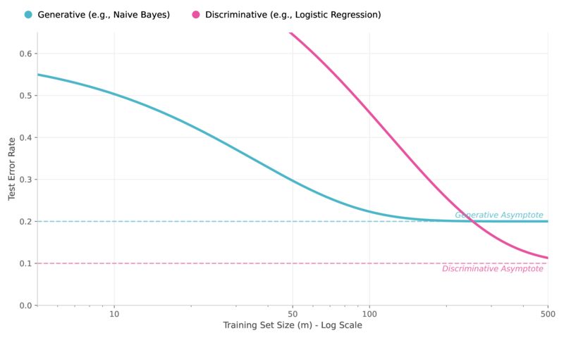
The "two regimes" (Ng & Jordan, 2002)
The Modern Recipe
Generative Pre-training → Discriminative Fine-tuning
Phase 1: Pre-train
Generative objective on massive unlabeled data
MLM, next-token prediction, de-rendering
→ Learns robust representations
⟹
Phase 2: Fine-tune
Discriminative objective on labeled data
Classification, QA, fact verification
→ Lower asymptotic error
Best of both worlds: generative phase provides the "prior," discriminative
phase optimizes the decision boundary
Architectures at a Glance
Encoder-Only
BERT
Bidirectional attention → understanding
Decoder-Only
GPT
Causal attention → generation
Encoder-Decoder
T5
Both → sequence-to-sequence
Vision Transformer
ViT
Image patches as tokens → unified architecture
If text = tokens and images = patch-tokens, a single Transformer can process both
Visual Language & the Gap
What existed
- LayoutLM: 2D positional embeddings for documents
- VisualBERT: cross-modal attention on natural images
- Focus on photographs, not structured content
The gap we address
- Tables in documents
- Charts and plots
- Reliability and uncertainty
- Evolving vocabulary & facts
Incorporating Tables
into Models
Chapter 3
EMNLP 2020 · EMNLP 2021 · EMNLP 2022 · ACL 2024
The Challenge
Language models are pre-trained on flat text, but tables have 2D structure
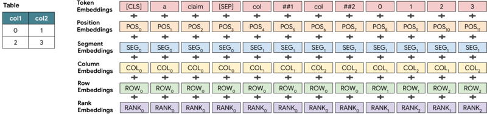
TAPAS: Adding row, column, and rank embeddings to BERT for table understanding
Intermediate Pre-training
Teaching models to reason about tables before fine-tuning
Counterfactual Statements
Corrupt real sentences about Wikipedia tables by swapping entities with plausible alternatives
"Australia won 5 medals" → "Canada won 5 medals"
Synthetic Statements
Generate sentences from logical expressions that filter, combine, and compare table data
argmax, sum, count, compare → natural language
TabFact Results
Table Fact Verification
+6 pts (BERT-base) · +9 pts (BERT-large) over previous SOTA
Data Efficiency
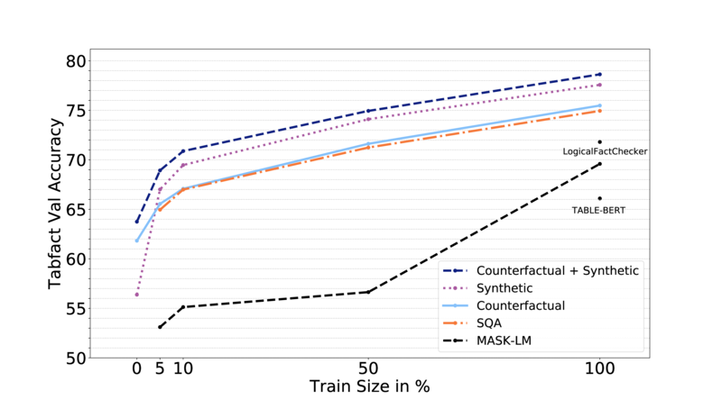
Pre-training with counterfactual + synthetic data matches Table-BERT using only 10% of
the fine-tuning data
Analysis: What Did the Model Learn?
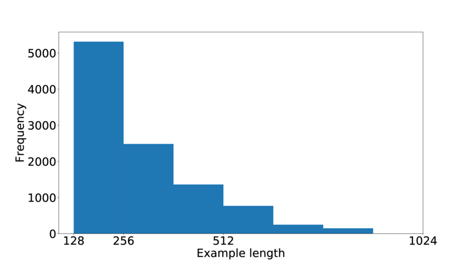
Salient group analysis
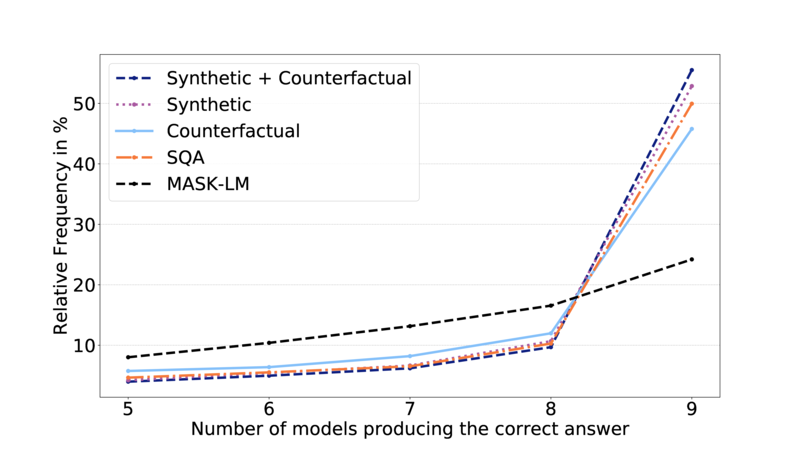
Model agreement with specialized methods
MATE: Efficient Attention for Tables
Multi-view Attention for Table Transformer Efficiency
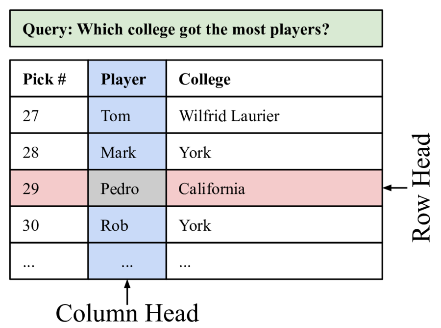
Restrict attention to row/column views
- Sparse attention → linear cost in sequence length
- Drop-in replacement for BERT attention
- Provably universal approximation
- 2× faster inference at <1 pt accuracy loss
MATE: Efficiency Gains
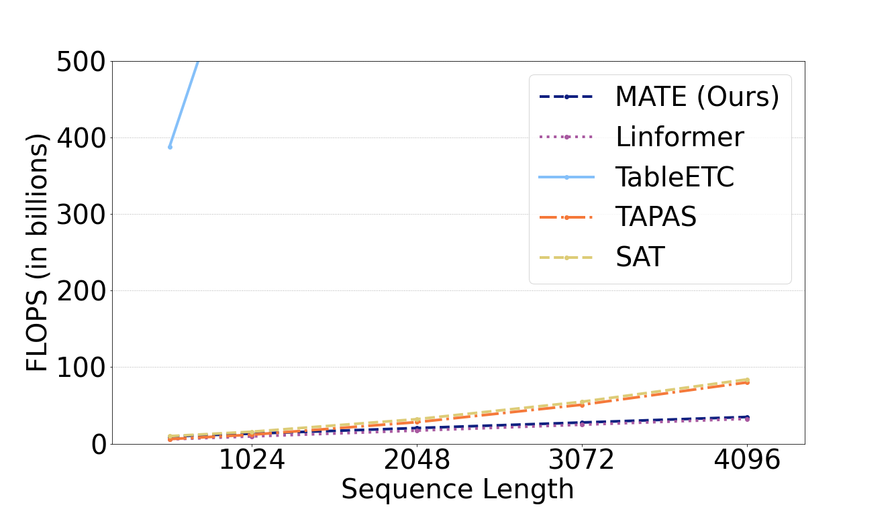
FLOPs comparison vs. sequence length
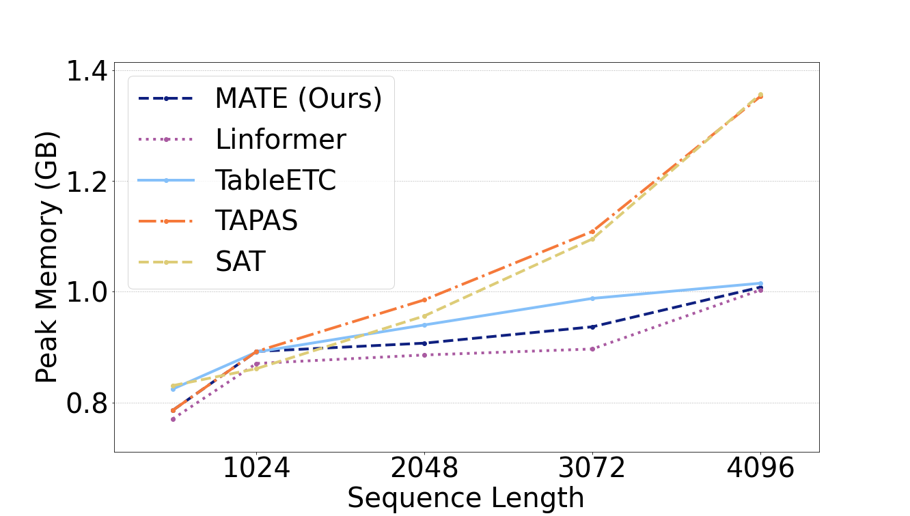
Peak memory usage
TabT5: From Understanding to Generation
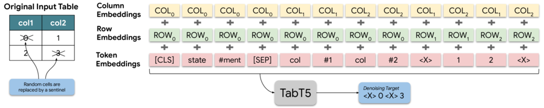
Encoder-decoder architecture with structural embeddings for table-to-text generation
TabT5 Pre-training & Results
Pre-training Strategies
- De-noising: reconstruct corrupted tables
- ToTTification: generate related text from web tables
Results
- Consistent gains on 4 benchmarks
- Improved ToTTo, SQA, TabFact, FeTaQA
Chapter Takeaway: Structural embeddings + intermediate pre-training + encoder-decoder
generation = comprehensive table understanding.
Incorporating Charts
into Models
Chapter 4
ACL 2023 (×2) · ACL 2024
From Tables to Charts
Two complementary approaches
End-to-End
Image → Model → Answer
MatCha
Modular
Image → Table → LLM → Answer
DePlot
MatCha: Pre-training for Charts
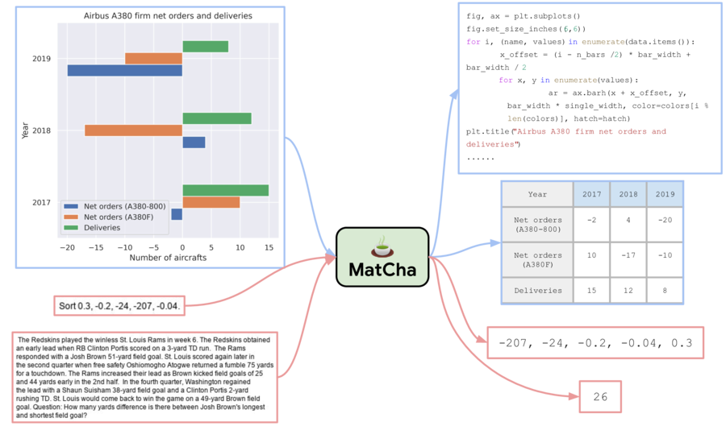
Chart De-rendering
Image → underlying data table
Math Reasoning
MATH + DROP datasets for numerical computation
MatCha: Main Results
MatCha (300M params) outperforms PaLI-17B on chart tasks
MatCha: Ablation Study
Each pre-training component contributes; chart de-rendering has the largest impact
MatCha: Fine-grained Analysis
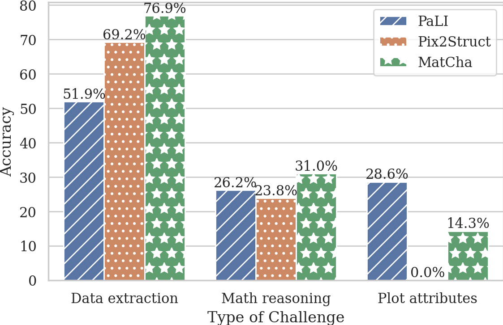
MatCha excels at data extraction and math reasoning; visual attributes remain challenging
DePlot: Modular Chart Reasoning
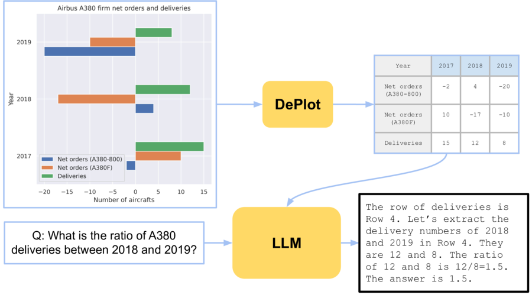
Translate chart → linearized table, then use any LLM for reasoning
DePlot: Results
DePlot + LLM achieves 67.6% on ChartQA-Human (vs. 38.2% MatCha) with just
one example
ChaTS-Pi: Faithful Chart Summarization
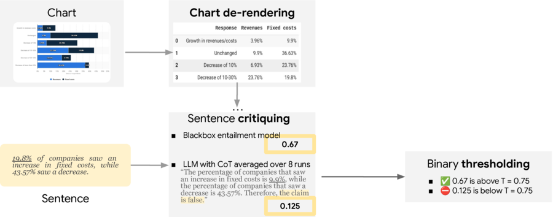
Extract data via DePlot, then verify entailment between summary and underlying table
Charts Chapter Summary
- MatCha: End-to-end → strong on extractive & synthetic queries
- DePlot: Modular → excels on complex human queries with LLM reasoning
- ChaTS-Pi: Faithfulness scoring → reliable chart summaries
"What I cannot create, I do not understand" — R. Feynman
Incorporating Multimodal
Uncertainty
Chapter 5
EMNLP 2023 · ACL 2024
When Models Should Say "I Don't Know"
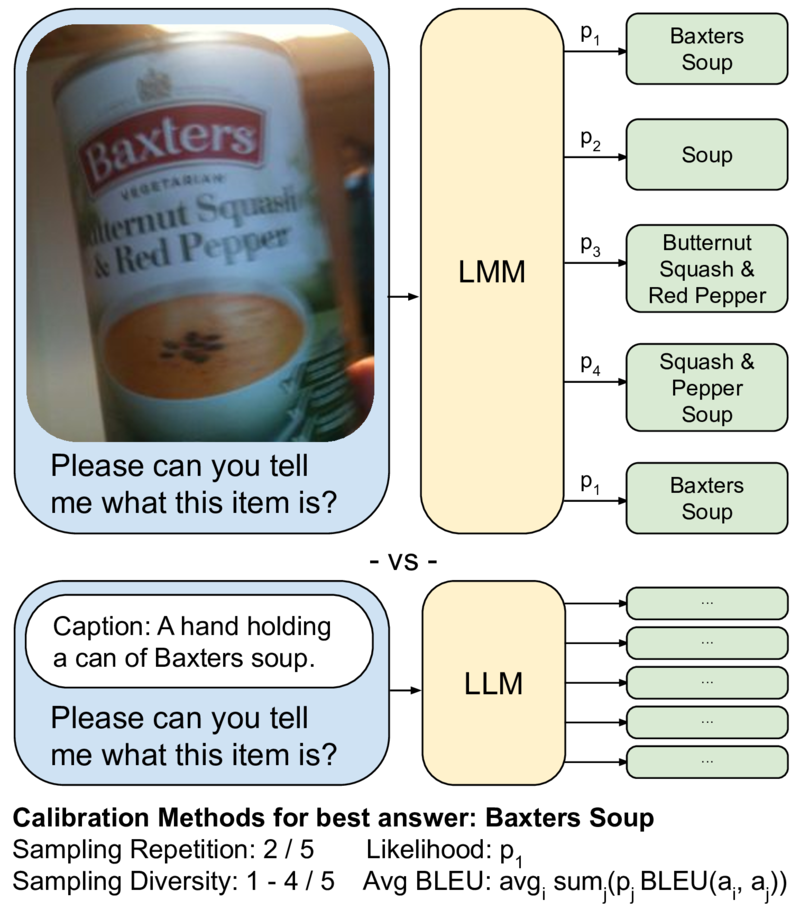
Sampled outputs from an LMM on a VizWiz-VQA example used to measure calibration
Scoring Methods
Existing Methods
- Likelihood: \(P(y|x)\) from the model
- Sampling Repetition: most frequent answer ratio
- Sampling Diversity: proportion of distinct answers
Our Proposal
Avg BLEU
Average pairwise semantic similarity among sampled outputs
\(\text{Score} = \frac{1}{\binom{n}{2}} \sum_{i < j} \text{BLEU}(s_i, s_j)\)
Calibration Results
Avg BLEU consistently outperforms alternatives across ECE, ROC-AUC, and
Coverage@Acc
LMMs vs. LLMs: Calibration
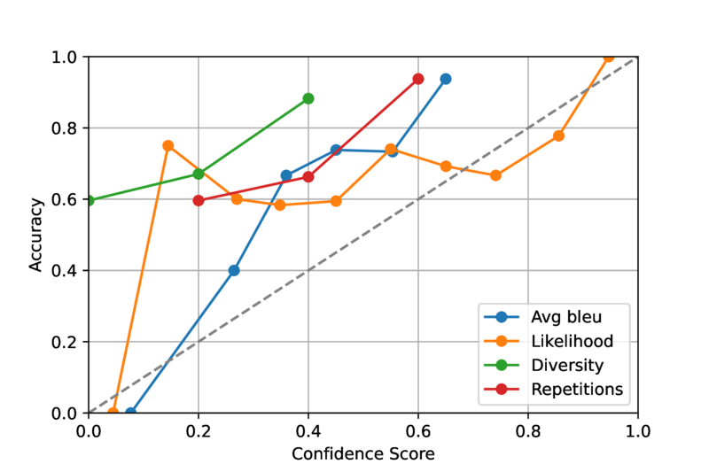
Visual modalities introduce new sources of ambiguity compared to text-only LLMs
Uncertainty Chapter Summary
- High accuracy ≠ reliable — calibration matters for real users
- Avg BLEU: simple, effective, sampling-based uncertainty metric
- Critical for assistive technology (visually impaired users)
Key Insight: Knowing what you don't know is as important as knowing.
Incorporating Novel
Vocabulary
Chapter 6
EACL 2023
WinoDict: Can Models Learn New Words?
The Problem
LLMs' vocabularies are frozen at training time, but new words emerge constantly.
The Benchmark
Take Winograd-style coreference problems and replace the key word with a novel word +
its dictionary definition
Original: "The trophy doesn't fit in the suitcase because it is too
large."
WinoDict: "The glorp doesn't fit in the suitcase because it is too
large."
glorp (n): a shiny metal award
WinoDict Results
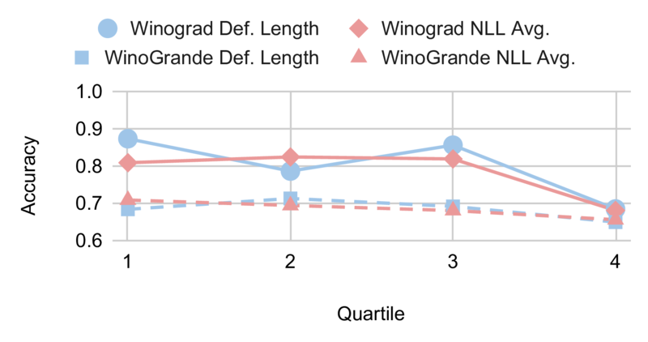
Accuracy drops dramatically when key concepts are replaced with novel words, even with
definitions provided
Vocabulary Chapter Summary
- LLMs struggle with in-context word acquisition
- WinoDict provides a controlled benchmark for measuring this limitation
- Human evaluation confirms the gap between human and model performance
This limitation motivates the next chapter: not just words, but facts evolve over
time.
Incorporating
Time-Stamped Facts
Chapter 7
TACL 2022
Facts Have Expiration Dates
The Problem
"Who is the president of [country]?" — the answer changes over time
LMs trained on static snapshots → stale knowledge
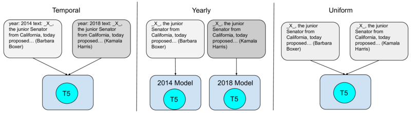
TempLAMA benchmark structure
Jointly Modeling Text and Time
Yearly
Train separate model per time period
More expensive, better at memorization
Temporal
Single model with time metadata in input
Efficient, better calibration for future
Memorizing Facts Across Time
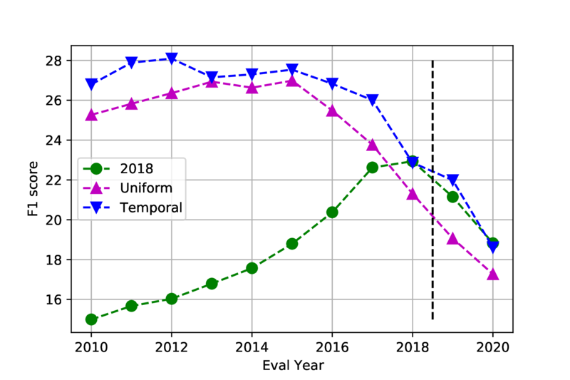
Temporal models improve memorization of seen facts and scale better to new time periods
Better Calibration & Cheaper Adaptation
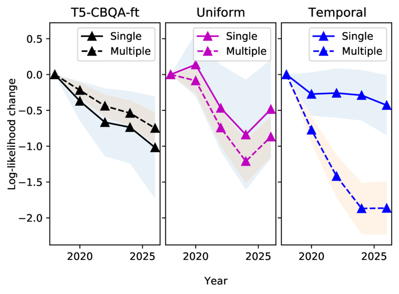
Graceful degradation on unseen future facts
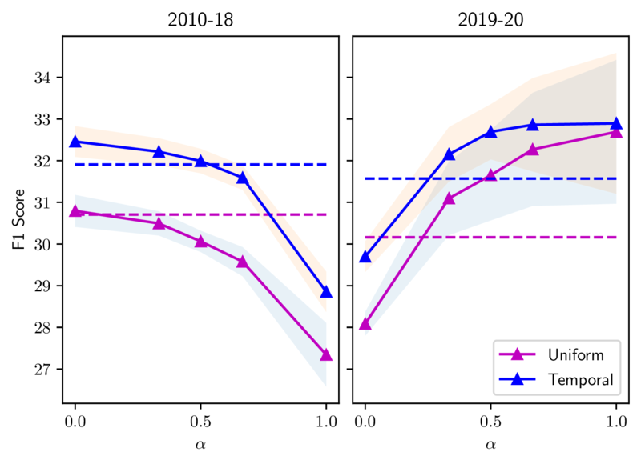
Efficient adaptation with new data, without full retraining
Time Chapter Summary
- Adding temporal metadata is simple but powerful
- Improves memorization, calibration, and efficient adaptation
- Together with WinoDict: both words and facts evolve — static models are incomplete
Conclusion
Chapter 8
Cross-Cutting Learnings
🔄 Symbiosis of Understanding & Generation
The ability to generate is consistently the best proxy for comprehension
🌐 Web-Scale Structured Content
HTML tables, charts, timestamps → powerful self-supervised signals
⚡ Efficiency & Specialized Models
Smaller, focused models often outperform much larger generalist ones
🎯 Beyond Benchmarks
Calibration, faithfulness, and temporal validity matter more in deployment
The Big Picture
Ch 3: Tables
TAPAS · MATE · TabT5
Ch 4: Charts
MatCha · DePlot · ChaTS-Pi
Visual Language Reasoning
Ch 5: Uncertainty
Avg BLEU · Selective QA
Ch 6–7: Evolution
WinoDict · TimeLM
"What I cannot create, I do not understand"
Limitations & Ethics
Limitations
- English-centric datasets
- Some single-run results
- Prompt sensitivity in LLM experiments
- Synthetic benchmarks vs. real-world complexity
Ethical Considerations
- Bias from web-crawled pre-training data
- Risk to visually impaired users from confident errors
- Environmental impact of large-scale training
- Low privacy risk (public datasets)
Future Work
1
Richer Visual Encoding
Beyond text: colors, spatial attributes, visual grammars for comics and infographics
2
Better Training & Evaluation Data
Web-grounded, multilingual, multi-modal benchmarks that reflect real-world complexity
3
From Understanding to Generating Visualizations
Measure and improve the quality of model-generated charts and tables
Publications & Open Source
Thank You
Questions?
Julian Martin Eisenschlos
eisenjulian@google.com
Advisor: Dr. Luciana Benotti